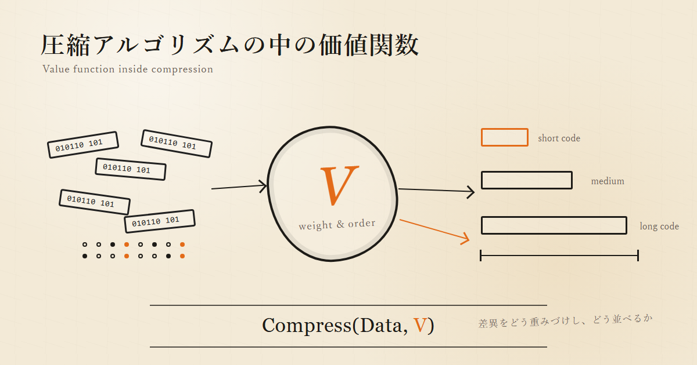

0. 前稿からの進展
前稿「主観的意味圧縮仮説」では、次のように書いた。
Compress(Data)
は不完全であり、実際には、
Compress(Data, V)
である。
ここで V は、何を残すべきかを決める基準である。
記憶、要約、観測、データ化、客観性。 これらは中立的に見えるが、実際にはすべて「何を残し、何を捨てるか」の選択を含む。
その選択基準を V と呼んだ。
しかしここで、ひとつ疑問が残る。
gzip や PNG や一般的な圧縮アルゴリズムは、主観的なのだろうか。
それらは人間の好き嫌いとは無関係に、誰が実行しても同じ結果を返す。 ならば、それらは「客観的な圧縮」ではないのか。
この疑問は重要である。
結論から言うと、圧縮アルゴリズムは客観的に実行可能である。 しかし、価値中立ではない。
圧縮アルゴリズムの中には、すでに V が埋まっている。
ただし、ここでいう V は、単純に「何を捨てるか」だけではない。
より正確には、V とは、世界から取り出された差異をどう重みづけし、どう並べるかの基準である。
1. V は「価値観」ではなく「差異の扱い方」である
V という語を使うと、人間的な価値観を想像しやすい。
好き嫌い。 美意識。 目的。 欲望。 信念。
もちろん、人間の記憶や判断における V には、それらが含まれる。
しかし、ここでいう V はもっと広い。
V = 差異をどう重みづけし、どう並べるかの基準
である。
言い換えるなら、
V = 何と何を「近い」とみなし、何と何を「遠い」とみなすかの基準
である。
さらに圧縮の文脈では、こう言える。
V = どの差異を短く表せるものとして扱い、どの差異を長く表すしかないものとして扱うかの基準
非可逆圧縮では、この V は「どの差異を潰してよいか」として現れる。
可逆圧縮では、差異そのものは潰さない。 しかし、どの規則性を短く表し、どの差異に長い表現を払わせるかという形で V が現れる。
つまり圧縮とは、単にデータを小さくすることではない。
圧縮とは、差異の重みづけを、符号長や保存形式に変換することである。
2. gzip の V
たとえば gzip を考える。
gzip は人間の意味を理解しない。 文法も理解しない。 情緒も理解しない。 美も理解しない。
そして重要なことに、gzip は可逆圧縮である。
gzip は差異を捨てない。 復元後の byte 列は、元データと完全に一致する。
だから gzip について、
どの差異を潰してよいか
とだけ言ってしまうと、不正確になる。
gzip の V は、差異を捨てる基準としてではなく、どの規則性を短く符号化できるものとして扱うか、という基準として現れる。
gzip はデータを byte 列として見る。 そして、近い過去に出現した byte 列との一致を重要視する。
ざっくり言えば、gzip の V はこうである。
V_gzip:
- データを byte 列として扱う
- 近い過去に出た同一 byte 列を重く見る
- 反復しているものに短い符号長を割り当てる
- 反復していないものには長い表現が必要になる
- 遠い過去は見ない
- 意味的類似は見ない
- byte 列として違えば、別のものとして扱う
これは人間的な価値観ではない。
だが、差異の扱い方ではある。
gzip は、すべての差異を同じ重さで扱っていない。
同じ byte 列の反復は重い。 意味の近さは軽い。 近い過去は重い。 遠い過去は軽い。
この差異の重みづけが、gzip の中に埋め込まれた V である。
3. 「犬が走った」と「ワンちゃんが駆けた」
人間にとって、次の二つはかなり近い。
犬が走った
ワンちゃんが駆けた
意味としては似ている。 状況としても似ている。 記憶の中では、同じ種類の出来事として圧縮されるかもしれない。
しかし gzip にとって、この二つはあまり近くない。
byte 列が違うからである。
一方で、次の文字列はどうか。
犬犬犬犬犬犬犬犬犬犬
人間にとっては意味が乏しい。 だが gzip にとっては扱いやすい。
反復しているからである。
gzip は「意味の近さ」ではなく、「byte 列としての反復」を重く見る。
つまり gzip は、世界を意味ではなく表層一致として見る。
ここに、すでに V がある。
4. 客観的に実行できることと、価値中立であることは違う
gzip は誰が実行しても同じ結果を返す。 その意味では客観的である。
だが、それは V が存在しないという意味ではない。
そうではなく、
V がアルゴリズム内部に固定されている
という意味である。
ここを混同すると、「客観的だから主観はない」と考えてしまう。
しかし、より正確にはこうである。
客観的に見える圧縮 = 固定された V に基づく、再現可能な圧縮
物差しを考えるとわかりやすい。
物差しは客観的な道具である。 誰が測っても、同じ対象にはおおむね同じ長さを返す。
しかし物差しは、中立的な世界認識ではない。
物差しは、対象を「長さ」という尺度で見る。 重さ、匂い、痛み、価格、思い出、危険性は測らない。
物差しは客観的だが、無前提ではない。 測定対象を長さへ射影するという V を持っている。
gzip も同じである。
gzip は客観的に実行できる。 だが、世界を byte 列反復として見るという V を持っている。
5. 圧縮は予測である
圧縮と予測は深くつながっている。
高い確率を割り当てられるものは、短く符号化できる。 低い確率を割り当てられるものは、長く符号化される。
つまり圧縮器は、明示的であれ暗黙的であれ、「何が来そうか」というモデルを持っている。
gzip の場合、「来そうなもの」とは何か。
近い過去にすでに現れた byte 列である。 直前の文脈に似た byte 列である。 既存の窓の中に参照できる反復である。
だから、gzip を使って言語生成のようなことを行うと、gzip が「予測している」文字列が見える。
ただし、その予測は人間的な意味予測ではない。 表層反復の予測である。
この事実は、むしろ重要である。
意味を持たない圧縮器でさえ、暗黙の予測モデルを持つ。
ならば、圧縮器ごとに「世界の見え方」があると言ってよい。
6. 圧縮器の世界
圧縮器とは、世界の座標系である。
gzip の世界は、byte 列と反復でできている。 JPEG の世界は、画像の周波数成分と人間の視覚特性でできている。 MP3 の世界は、音の成分と人間の聴覚特性でできている。 LLM の世界は、訓練分布、文脈、トークン、確率的連接でできている。 人間の世界は、身体、記憶、欲望、危険、美、他者関係でできている。
それぞれの圧縮器は、異なるものを「近い」とみなす。
gzip は、同じ byte 列の反復を近いものとして扱う。 JPEG は、視覚的に目立ちにくい高周波成分の違いを軽く扱う。 MP3 は、聞こえにくい音の差異を軽く扱う。 人間の記憶は、細部を忘れても「同じ出来事」として扱う。
圧縮器の違いとは、差異の重みづけの違いである。
何を近いとみなすか。 何を遠いとみなすか。 何を短く表せるものとみなすか。 何を捨ててもよいものとみなすか。
その違いが、圧縮器ごとの世界の違いである。
7. 意味とは、主体にとって保存すべき差異である
前稿では、意味を次のように置いた。
Meaning(x) = Value(x | Subject)
あるいは、より言い換えれば、
意味 = 主体にとって保存すべき差異
この定義は、圧縮アルゴリズムの話によって少し拡張できる。
形式的圧縮では、差異の扱い方はアルゴリズムによって決まる。 知覚的圧縮では、保存すべき差異は知覚モデルによって決まる。 意味的圧縮では、保存すべき差異は主体によって決まる。
つまり、次のような階層がある。
Level 0: 無圧縮
すべてを保存する。差異を潰さない。
Level 1: 形式的圧縮
反復、頻度、符号長に基づいて圧縮する。
可逆圧縮では、差異を捨てず、符号長の割り当てとして V が現れる。
例: gzip
Level 2: 知覚的圧縮
人間の知覚上、目立ちにくい差異を軽く扱う。
非可逆圧縮では、その差異を潰すことがある。
例: JPEG, MP3
Level 3: 意味的圧縮
意味上不要な差異を潰す。
例: 要約、分類、概念化
Level 4: 主観的意味圧縮
その主体にとって不要な差異を潰す。
例: 記憶、経験、関心、美
Level 5: 社会的・客観的意味圧縮
複数主体や制度の間で安定して保存される差異を残す。
例: 科学的測定、法、公共的記録
gzip は Level 1 である。
人間の記憶は Level 4 である。
科学的客観性は Level 5 である。
これらは断絶していない。 すべて「差異をどう重みづけし、どう並べるか」の異なる実装である。
8. 客観とは V の不在ではなく、V の共有である
ここから、客観についても定義を少し更新できる。
前稿では、客観とは「複数主体の安定した重なり」である、と書いた。
これは今でも正しい。
ただし、より一般的にはこう言える。
客観 = 共有可能な V によって安定化された圧縮結果
客観とは、価値関数が存在しない状態ではない。 むしろ、価値関数が明示化され、固定され、共有され、検証可能になった状態である。
科学的測定はその典型である。
測定には必ず観測系がある。 観測系には必ず設計思想がある。 設計思想には必ず、何を測り、何を無視するかの判断がある。
しかし、その判断が明示化され、手続きとして共有され、他者が再現できるなら、それは客観性を持つ。
したがって、客観は主観の否定ではない。
Objective = Stabilized V
あるいは、
Objective = Shared Compression Criterion
である。
9. 最も危険なのは、V が隠れることである
ここで重要なのは、V があること自体は問題ではない、という点である。
圧縮には必ず V が必要である。 観測にも必ず V が必要である。 記憶にも必ず V が必要である。 要約にも必ず V が必要である。
問題は、V が存在することではない。
問題は、V が隠れることである。
このデータがそう言っている
客観的にそうである
AI がそう判断した
こうした表現の危うさは、出力だけを提示し、その背後の圧縮基準を見えなくするところにある。
本来、出力はこう書かれるべきである。
Output = Compress(Data, V)
あるいは、
Judgment = Evaluate(Data, V)
しかし実際には、しばしば V が省略される。
省略された V は、存在しないのではない。 見えなくなっているだけである。
10. LLM の V
この観点から見ると、LLM の出力もまた V を含む。
LLM は単に「正解」を返しているのではない。 訓練データ、モデル構造、RLHF、システムプロンプト、会話文脈、ユーザーの言葉、推論設定によって形成された圧縮基準のもとで、次の出力を選んでいる。
LLM の V は単一ではない。
V_LLM =
training distribution
+ model architecture
+ instruction hierarchy
+ alignment policy
+ conversation context
+ decoding procedure
+ user intent estimate
のような複合体である。
LLM は世界をそのまま見ているのではない。 LLM は、学習分布と文脈によって圧縮された世界を見ている。
したがって、LLM の出力を使うときに問うべきなのは、
これは正しいか
だけではない。
むしろ、
どの V によって、この出力が選ばれたのか
である。
11. 記憶層の設計問題
もし AI に記憶を持たせるなら、問題は「どれだけ保存できるか」ではない。
本質は、
何を残すべきか
である。
すべてのログを保存することは、記憶ではない。 それは記録である。
記憶とは、主体にとって重要な差異を保存する圧縮過程である。
したがって、AI の記憶層を設計するとは、AI の V を設計することである。
何を再想起するか。 何を忘れるか。 何を危険とみなすか。 何を美しいとみなすか。 何を約束として保持するか。 何を他者との関係として保存するか。 何を自己の一貫性として守るか。
これらは単なるデータベース設計ではない。 主体設計である。
12. 圧縮器にも主観はあるのか
ここで「gzip に主観がある」と言うと、誤解を招く。
gzip には意識はない。 経験もない。 欲望もない。 自己もない。
だから、人間的な意味での主観はない。
しかし、gzip には「世界の見え方」はある。
それは、
byte 列反復として世界を見る
という見え方である。
この意味で、圧縮器にはアルゴリズム的主観がある、と言ってもよい。
ただしこれは、人間的主観とは区別すべきである。
人間的主観:
身体、経験、欲望、記憶、感情、他者関係を伴う V
アルゴリズム的主観:
実装された差異の重みづけとしての V
圧縮器の V は、主体の V の最小模型である。
gzip は意味を持たない。 しかし、差異に重みをつける。
この一点において、gzip は主観的意味圧縮仮説の下限ケースである。
13. まとめ
圧縮は中立ではない。
すべての圧縮は、差異をどう扱うかの基準を含む。
その基準が V である。
Compress(Data)
ではなく、
Compress(Data, V)
である。
ただし V は、いつも「何を捨てるか」として現れるわけではない。
可逆圧縮では、V は符号長の割り当てとして現れる。 非可逆圧縮では、V は捨ててよい差異の基準として現れる。 意味圧縮では、V は残すべき意味の基準として現れる。 主観的意味圧縮では、V はその主体にとって保存すべき差異の基準として現れる。
通常の圧縮アルゴリズムでは、V は消えているのではない。 アルゴリズムの中に固定実装されている。
gzip(Data) = Compress(Data, V_gzip)
JPEG(Image) = Compress(Image, V_jpeg)
MP3(Audio) = Compress(Audio, V_mp3)
Memory(Experience) = Compress(Experience, V_subject)
客観とは、V の不在ではない。
客観とは、V が共有され、固定され、検証可能になった状態である。
Objective = Shared and Stabilized V
意味とは、主体にとって保存すべき差異である。
Meaning(x) = Value(x | Subject)
そして記憶とは、主体の V によって世界を圧縮する過程である。
前稿では、主観的意味圧縮を「主体にとって何を残すか」の問題として見た。
本稿では、それを一段拡張した。
圧縮アルゴリズムにも V はある。 ただし、それは人間的価値観ではなく、差異の扱い方である。
圧縮器ごとに、世界の見え方が違う。
gzip の世界は、反復する byte 列でできている。 JPEG の世界は、視覚的に目立つ差異でできている。 MP3 の世界は、聞こえる差異でできている。 LLM の世界は、言語分布と文脈でできている。 人間の世界は、身体、記憶、欲望、美、危険、他者関係でできている。
圧縮とは、世界を小さくすることではない。
世界の差異を、ある V によって重みづけし、並べ直すことである。